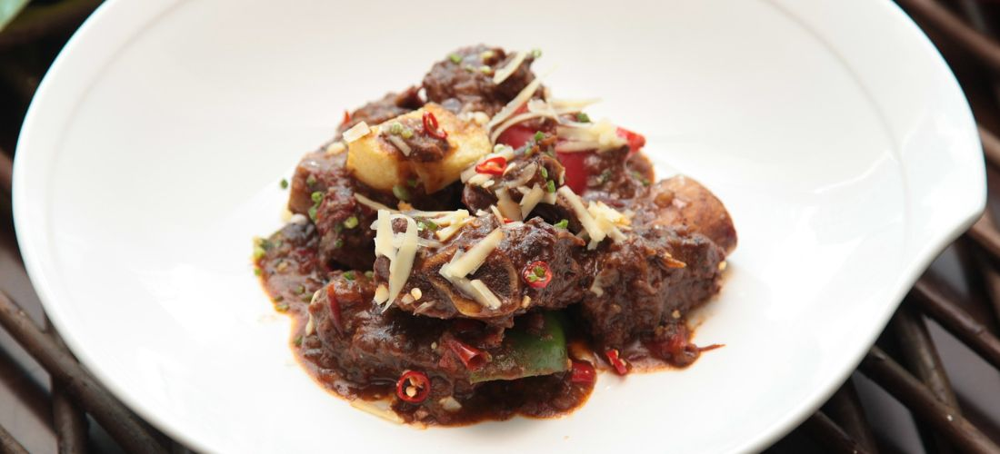

Caldereta Recipe
Caldereta is a comforting beef stew popular in the Philippines. Every family has its own version. Experiment with the ingredients and try different vegetables. Best served with white rice!
Ingredients
- 12 ounces chorizo sausage
- 1/4 cup garlic, minced
- 1/4 cup white vinegar
- 1/4 cup soy sauce
- 2 tablespoons olive oil, or as needed
- 1 onion, chopped
- 1 green bell pepper, chopped
- 3 cups tomato sauce
- 2 cups peeled and cubed potatoes
- 1 cup drained canned peas
- 1 teaspoon salt
- 1 teaspoon ground black pepper
Instructions
- Step 1
- Step 2
- Step 3
- Step 4
- Combine beef chuck, chorizo, garlic, vinegar, and soy sauce in a skillet over medium heat; cook and stir until beef chuck is browned and liquid is reduced, about 20 minutes. Remove from heat.
- Heat olive oil in a pot over medium heat; cook and stir onion and green bell pepper in the hot oil until onion is translucent, 5 to 10 minutes. Add tomato sauce and simmer until liquid is slightly reduced, 3 to 5 minutes.
- Stir beef-chorizo mixture into tomato sauce mixture; bring to a boil. Reduce heat to medium-low, cover pot, and simmer for 30 to 40 minutes.
- Stir potatoes, peas, salt, and pepper into stew; simmer until beef is tender and potatoes are cooked through, 20 to 30 minutes. Add water if needed.